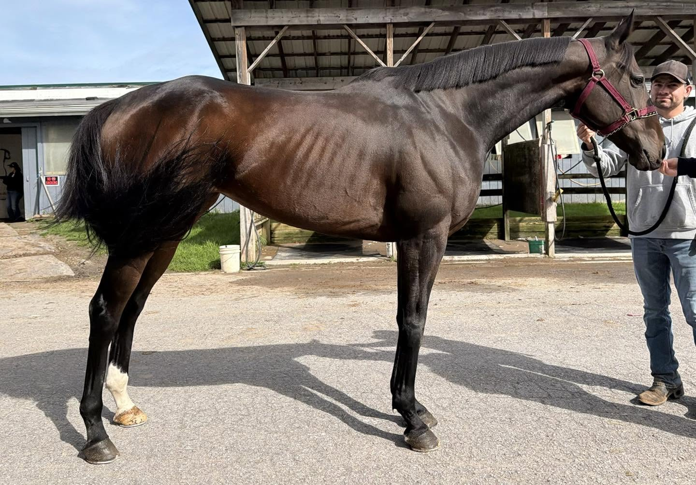
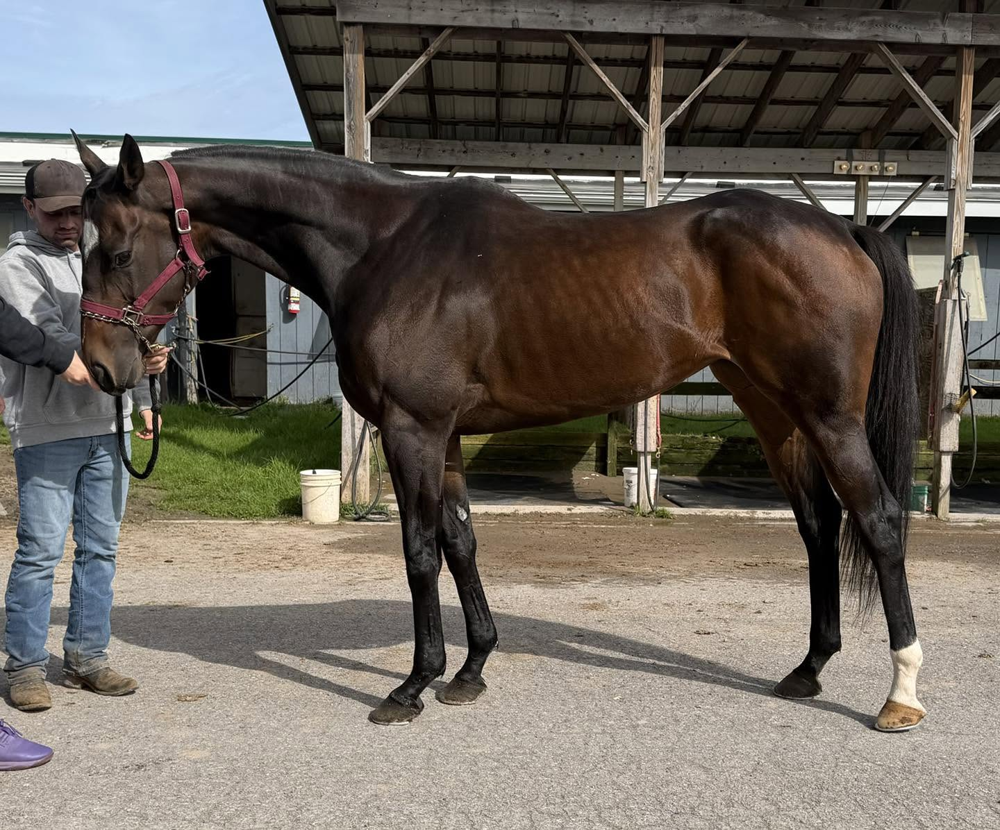
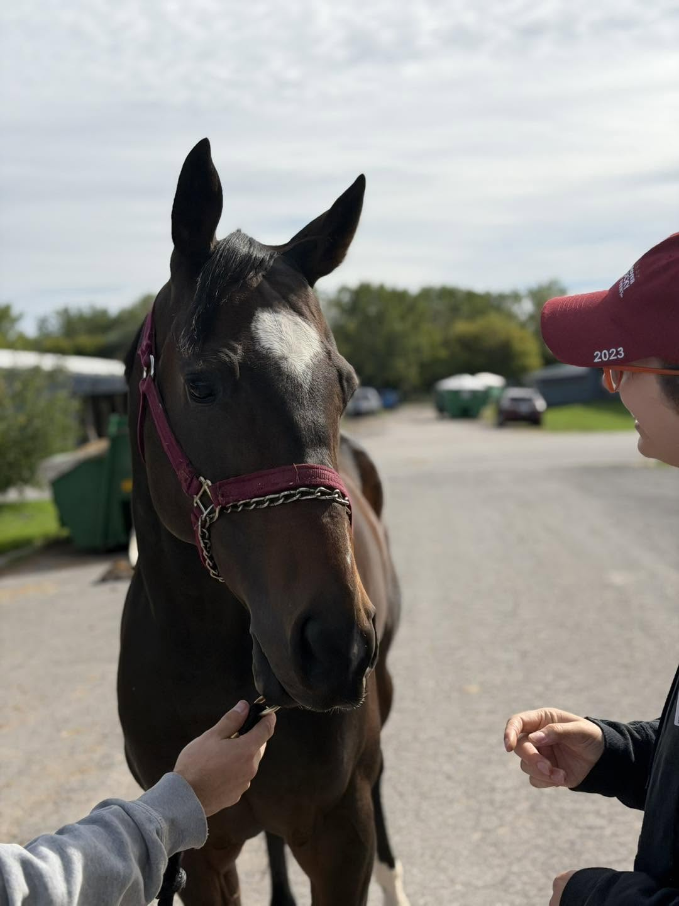
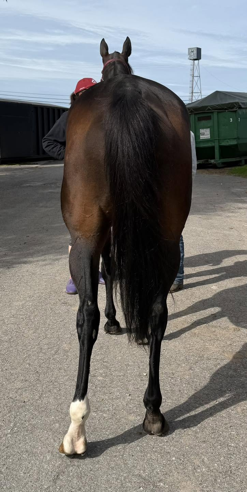
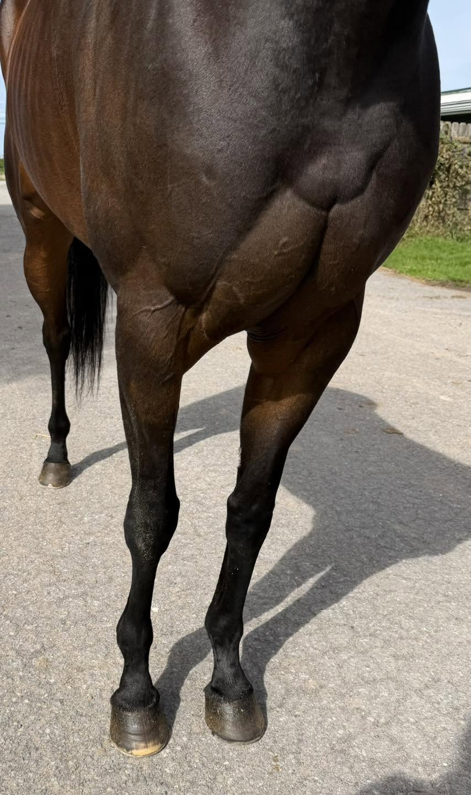
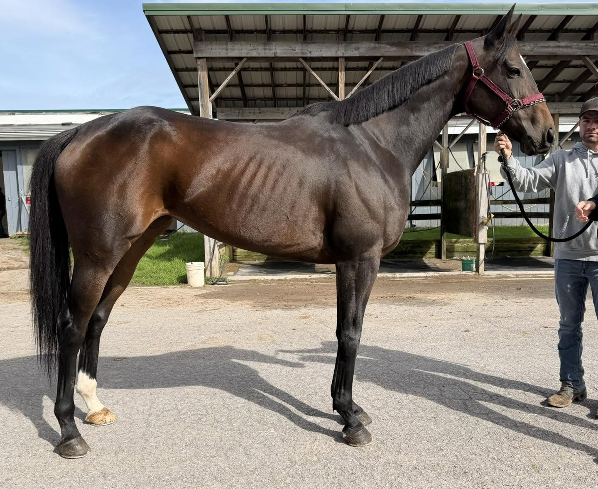
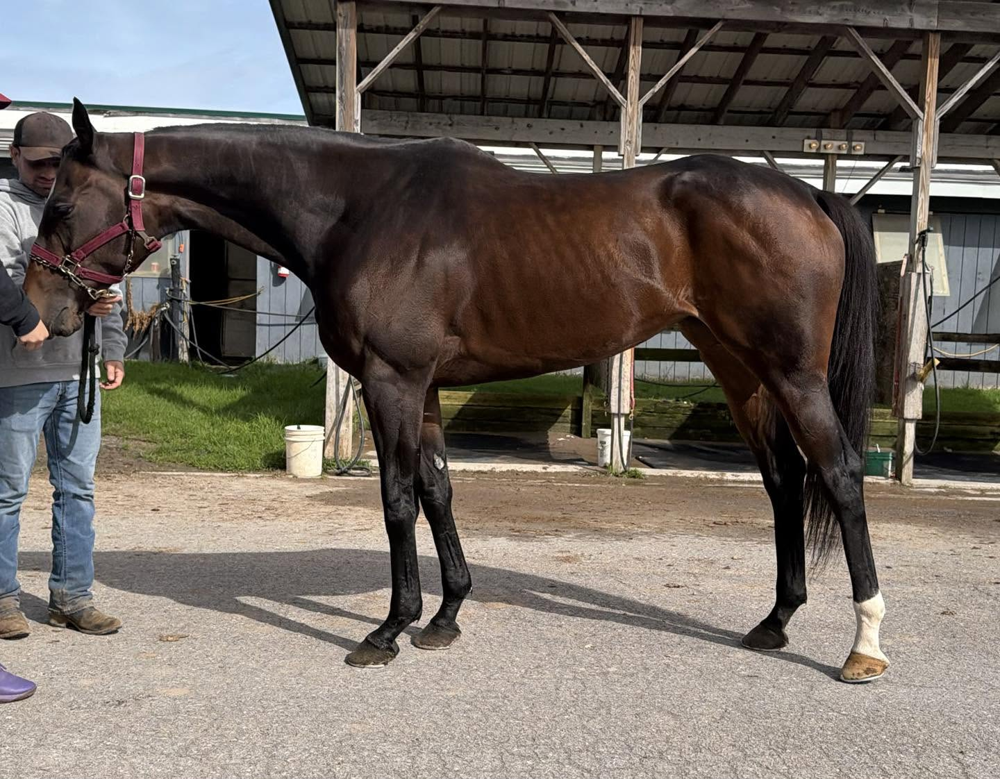
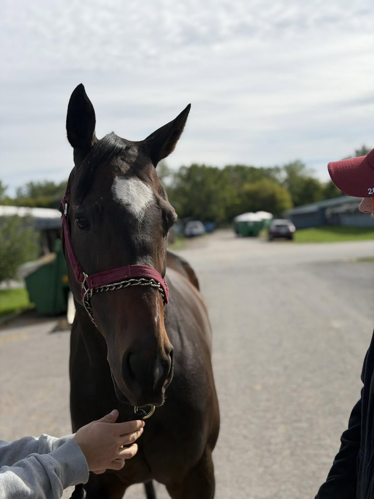

MISS PAB, 2019, 15.3 dark bay mare
Located at the Finger Lakes Race Track in Farmington, NY (near Rochester, NY).
If this post feels a little like déjà vu, it is. We posted this classy mare late last year but she unfortunately, she wasn’t placed before the season ended. We remembered her fondly and were delighted to see that she is just as lovely now. We’ve updated her photos and jog video.
The connections of this quiet and respectful mare always have nothing but superlatives to tell us about her. It was obvious to us that they deeply care for and admire her. We were told us that “she is the best” and very “smart”. We heard that she is such a great and easy horse on the farm and so trustworthy that over the winter, their young teen daughters feed, handle, and yes, even ride her at the farm. She was stated to be very sound, having no vices, and is easy to handle. It was even mentioned that she has the cleanest and easiest stall in the barn to clean (yes, we always love that when we are the ones on barn duty!).
She was a great model for her photo shoot- she stood quietly remaining alert, curious, and cooperative (and very happy to discover that peppermints were involved too!). She has a more compact build and balance. We liked the length of her shoulder and her powerful hindquarters. We loved the adorable heart-shaped marking on her pretty face, her dapples, and soft, shiny coat! She was attentive and relaxed, jogging quietly and politely for her handler. Overall, we observed a sweet, kind, well-mannered, and easy-going mare. She’s had a very respectable career- a true war horse mare. A gritty campaigner with 58 starts who in the past two years, facing tougher conditions, has struggled to get on the board. So, as the season is winding down, her connections seek only the very best of homes for their beloved girl. She certainly has won our respect- a well behaved and elegant lady with class, toughness, and demonstrated durability.
Miss Pab is by Exaggerator (Curlin) out of a Malibu Moon mare with Giant’s Causeway also appearing in her pedigree, some very popular sports sire lines. With her kindness, great brain, and solid work ethic, we could see her as a fun and agreeable partner, up for trying anything and everything that you might want to pursue.
Contact: Julie Pierson (315) 719-9583
Price: $2,500 neg.
Please note that references will be required and checked prior to being able to purchase this horse. Please see our post pinned to the top of our FB page for more information.
A PPE is always recommended. For information about vet practices available to do PPEs, and other important information about the buying process, please see the How to Buy page.







